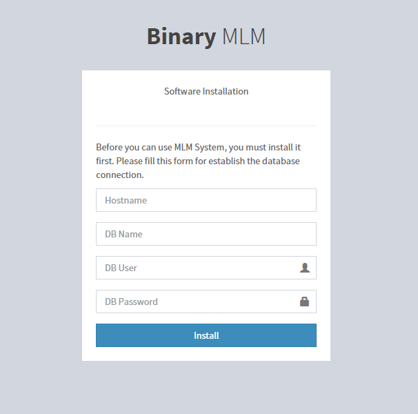
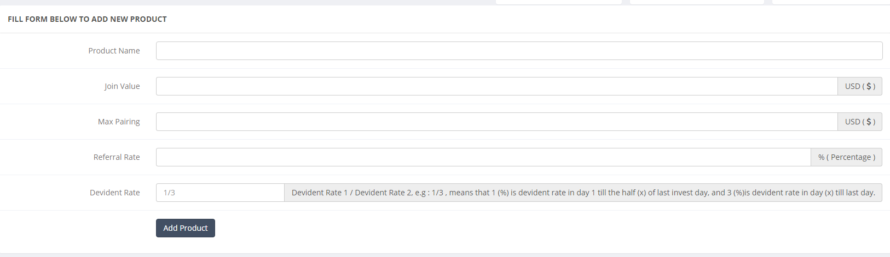
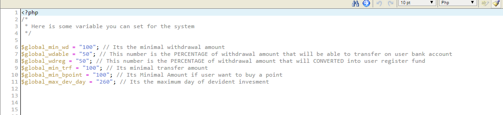

Thank you for purchasing my theme. If you have any questions that are beyond the scope of this help file, please feel free to email via my user page contact form here. Thanks so much!
Before you can use your binary mlm script, you must configure the database first. First of all, please create database and please remember the credentials ( username, password, dbname, hostname ). After you create the database, now we should extract the archive to your web directory root.
extract mlm-main.zip to your web root > e.g /home/usr/public_html/
Now we are ready to start the installation
NB : Please install it as a domain or subdomain, dont install it as subdirectory.
CORRECT : yourdomain.com, mlm.yourdomain.com, etc
INCORRECT : yourdomain.com/mlm
Go to your web app url that you want to install the script. for example yourdomain.com , then you will get redirected to installation page like this.

Now you just need to Fill the form using your database connection. ( Please make sure that the folder /includes is writeable )
/* === Hostname === */ e.g localhost /* === DB Name === */ e.g yourdb_name /* === DB user === */ e.g yourdb_user /* === DB Pass === */ e.g yourdbpass
In some cases, the installer can make the configuration / dbsetting file, to fix this, you must create it manually, go to /includes and rename new.dbconfig.php to dbconfig.php, then open it using your code editor / text editor
/* === dbconfig.php === */ [SQL] host = localhost username = DBUSERHERE password = DBPASSWORD dbname = YOURDBNAME /* === End FIle === */
Now you must edit the bold text to become your credential, after that save it, and we are ready to login
Now after you finsih set the database connection, you can try to login, just navigate to yourdomain.com/login to login into the system. You can use these username and password to first login, and dont forget to change the password later
Username : administrator Password : administrator
After you get inside the system, it will ask you for set the transaction PIN , just fill the form with 6 numerical pin and please keep it save so you wont forget it
To Create a new product, navigate to PRODUCTS menu and click and new product, then you will see this form

This form is used for add a new product, here is some information about the fields
/** Product Name **/ The Product Name /** Join Value **/ Its the price of this product, and also, it would be the user initial / starter fund, so for example, you make a product with join value 100 (USD) , then when user subscribe into this product, They will pay 100USD to you and 100USD will be fund on their account as a AVAILABLE FUNDS /** Max Pairing **/ Is the maximum amount of DAILY PAIRING BONUS user can get /** Referral Rate **/ The Bonus Rate for Registering a new account /** Devident Rate **/ Its the devident rate for user who subscribe the product, in this system, devident has a maximum day ( default is 260 day investment ) , 1/3 means that on the day 1 till day 130 the user get 1% devident investment, and from day 131 till 260, they get 3% of bonus investment, you can change the maximum day on /includes/global.variable.php
Now we want to take a look into GLOBAL VARIABLE setting, you can navigate into
/includes/global.variable.php
Open it using your text / code editor, and you will find something like this

Here you can edit this variable to fit on your needs, and dont forget to save it
To calculate daily bonus, you must create a cronjob. make a cronjob at 00:00 once a day
GET http://yourdomain/bonus/go
And then save it.
Here is some external link that might be helpfull
http://code.tutsplus.com/tutorials/scheduling-tasks-with-cron-jobs--net-8800
https://documentation.cpanel.net/display/ALD/Cron+Jobs
We are using Silex Framework as main structure of our web app, If you want to edit the modules, you can navigate to this directory
/includes/modul
There you will find folders, each folder is a modules folder, if you want to create new modules, you can do it. Just follow this simple tutorial
To make an admin module the point is
1. Register it to menu
2. Create The Function
Lets say we want to make module called "Skeleton" , to do that first of all, create a new folder called skeleton on
/includes/modul
after that , create a init.php inside that folder ( The system will read all init.php for each modul folder ) , now try to input these code into the init.php file
global $hooks;
use Symfony\Component\HttpFoundation\Request;
use Symfony\Component\HttpFoundation\Response;
if ($_SESSION["role"] == 0) {
$hooks->add_action('silex_action', 'skeleton_module');
}
function skeleton_title() {
echo "Its only a Skeleton";
}
function skeleton_js() { ?>
<script type="text/javascript" src="/assets/js/bootstrap-inputmask/bootstrap-inputmask.min.js"></script>
<script type="text/javascript" src="/assets/js/jquery.validate.min.js"></script>
<?php }
function skeleton_module(){
global $app;
$app->get('/skeleton', function() {
global $hooks;
$hooks->add_action('global_js', "skeleton_js");
$hooks->add_action('the_title', "skeleton_title");
the_head();
include 'skeleton.tpl.php';
the_footer();
return "";
});
}
Now we will explain point by point,
global $hooks; use Symfony\Component\HttpFoundation\Request; use Symfony\Component\HttpFoundation\Response;
Is used for calling the hooks variable, so we can hook the modul into the system, and Request & Response are used for make our modules can handle a Request ( POST ) and return a response
if ($_SESSION["role"] == 0) {
$hooks->add_action('silex_action', 'skeleton_module');
}
Is used for check if the user is admin or not, because we want to this module are accessible by admin only ( role = 0 ) so we make this conditional, if the role is 0 , then add skeleton_module function into main action ( add_action is like on wordpress )
function skeleton_title() {
echo "Its only a Skeleton";
}
It will be used for the module title
function skeleton_js() { ?>
<script type="text/javascript" src="/assets/js/bootstrap-inputmask/bootstrap-inputmask.min.js"></script>
<script type="text/javascript" src="/assets/js/jquery.validate.min.js"></script>
<?php }
if you want to insert some script into this module, just wrap it into a function, we recommed to use this pattern as the name of function
function modulename_js()
it would make you easy to remember and void a conflict with another function
function skeleton_module(){
global $app;
$app->get('/skeleton', function() {
global $hooks;
$hooks->add_action('global_js', "skeleton_js");
$hooks->add_action('the_title', "skeleton_title");
the_head();
include 'skeleton.tpl.php';
the_footer();
return "";
});
}
Its the main function of the module, dont forget to add global $app on the first line of the function
$app->get('/skeleton', function() {
is the url that would be used for this module, so if we navigate to yourdomainname.com/skeleton we will access this handler, $app->get means it match a GET request, if you want to make a handler for post request, you just have to write $app->post
global $hooks
$hooks->add_action('global_js', "skeleton_js");
$hooks->add_action('the_title', "skeleton_title");
Its used for add skeleton_js into global_js action , and skeleton_title into the_title action, if you want to add a css into your module, just wrap it into a function, and add that action into global_css action
the_head(); include 'skeleton.tpl.php'; the_footer();
the_head used for call the HEAD and the_footer used for FOOTER wrapper, and between head and footer, dont forget to include the page ( in this case is skeleton.tpl.php ) , you just need to create the file on the module folder, so inside module skeleton folder it would have
init.php skeleton.tpl.php
now after we are finished setup the function, we need to add it into the admin menu, to add admin menu navigate into
/includes/modul/administrasi/init.php
now take a look into $dashboardmenu, you just need to an array inside that variable, like this
array(
"label" => "Skeleton Modul",
"url" => "/skeleton",
"icon" => "fa fa-bar-chart-o"
),
for "icon" you can visit fontawesome to find the icon code
To create user module, is just like create a admin module, with only 2 different
1. For user module you dont need to validate the user role ( $_SESSION["role"] )
2. You need to create 1 function for menu and hook it, the code is like this
$hooks->add_action('all_menu','new_menu');
function new_menu(){
global $menu_array;
$addmenu = array(
"label" => "Dashboard",
"url" => "/dashboard",
"icon" => "fa fa-home"
);
$menu_array[]=$addmenu;
}
We are using some external resources for our development, here you can find out
Our web based app are developed using SILEX FRAMEWORK, HOOKS CLASS, PDO SQL, you can visit it for additional documentation here.
Silex Docs : http://silex.sensiolabs.org/
PHP Hooks : https://github.com/bainternet/PHP-Hooks
Mysql PDO : https://github.com/indieteq/PHP-MySQL-PDO-Database-Class
Font Awesome : https://fortawesome.github.io
Twitter Bootstrap : http://getbootstrap.com/
We also Thank RevaXarts-Theme for the documenter
http://revaxarts-themes.com/documenter/